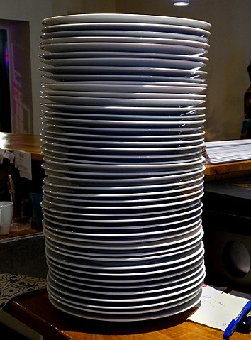

The next two data structures we’ll look at are stacks and queues. They are both very similar to lists in most respects, but each one puts a specific limitation on how the data structure operates that make them very useful in certain situations.
Stack
 ^[File:Lifo stack.png. (2017, August 7). Wikimedia Commons, the free media repository. Retrieved 23:14, February 7, 2020 from https://commons.wikimedia.org/w/index.php?title=File:Lifo_stack.png&oldid=254596945.]
^[File:Lifo stack.png. (2017, August 7). Wikimedia Commons, the free media repository. Retrieved 23:14, February 7, 2020 from https://commons.wikimedia.org/w/index.php?title=File:Lifo_stack.png&oldid=254596945.]
A stack is one special version of a list. Specifically, a stack is a Last In, First Out or LIFO data structure.
So, what does that mean? Basically, we can only add elements to the end, or top of the stack. Then, when we want to get an element from the stack, we can only take the one from the top–the one that was most recently added.
A great way to think of a stack is like a stack of plates, such as the one pictured below:
 ^[File:Tallrik - Ystad-2018.jpg. (2019, December 31). Wikimedia Commons, the free media repository. Retrieved 23:17, February 7, 2020 from https://commons.wikimedia.org/w/index.php?title=File:Tallrik_-_Ystad-2018.jpg&oldid=384552503.]
When we want to add a new plate to the stack, we can just set it on top. Likewise, if we need a plate, we’ll just take the top one off and use it.
A stack supports three major unique operations:
- push - add an item to the top of the stack;
- pop - remove an item from the top of the stack; and
- peek - see what the top item on the stack is, but don’t remove it.
Many stacks also include additional operations such as size and find as well.
Queue
 ^[File:Data Queue.svg. (2014, August 15). Wikimedia Commons, the free media repository. Retrieved 23:21, February 7, 2020 from https://commons.wikimedia.org/w/index.php?title=File:Data_Queue.svg&oldid=131660203.]
^[File:Data Queue.svg. (2014, August 15). Wikimedia Commons, the free media repository. Retrieved 23:21, February 7, 2020 from https://commons.wikimedia.org/w/index.php?title=File:Data_Queue.svg&oldid=131660203.]
A queue is another special version of a list, this time representing a First In, First Out or FIFO data structure.
As seen in the diagram above, new items are added to the back of the queue. But, when we need to take an item from a queue, we’ll take the item that is in the front, which is the one that was added first.
Where have we seen this before? A great example is waiting our turn in line at the train station,
^[File:People waiting a train of Line 13 to come 02.JPG. (2016, November 28). Wikimedia Commons, the free media repository. Retrieved 23:23, February 7, 2020 from https://commons.wikimedia.org/w/index.php?title=File:People_waiting_a_train_of_Line_13_to_come_02.JPG&oldid=223382692.]
In many parts of the world, the term queueing is commonly used to refer to the act of standing in line. So, it makes perfect sense to use that same word to refer to a data structure.
When to Use a Stack or a Queue
As we can probably guess, we would definitely want to use a stack if we need our data structure to follow the last in, first out, or LIFO ordering. Similarly, we’d use a queue if we need first in, first out or FIFO ordering.
If we can’t be sure that one or the other of those orderings will work for us, then we can’t really use a stack or a queue in our program.
Why Not Just Use Lists?
Of course, one of the biggest questions that comes from this is “why not just use lists for everything?” Indeed, lists can be used as both a queue and a stack, simply by consistently inserting and removing elements from either the beginning or the end of the list as needed. So why do we need to have separate data structures for a queue and a stack?
There are two important reasons. First, if we know that we only need to access the most recently added element, or the element added first, it makes sense to have a special data structure for just that usage. In this way, it is clear to anyone else reading our program that we will only be using the data in that specific way. Behind the scenes, of course, we can just use a list to represent a queue or a stack, but in our design documents and in our code, it might be very helpful to know if we should think of it like a stack or a queue.
The other reason has to do with performance. By knowing exactly how we need to use the data, we can design data structures that are specifically created to perform certain operations very quickly and efficiently. A generic list data structure may not be as fast or memory efficient as a structure specifically designed to be used as a stack, for example.
As we learn about each of these data structures throughout this course, we’ll explore how each data structure works in terms of runtime performance and memory efficiency.